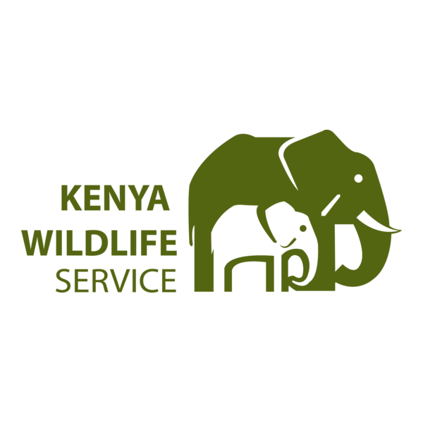
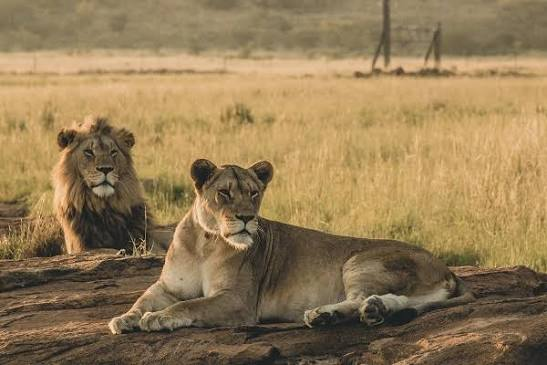
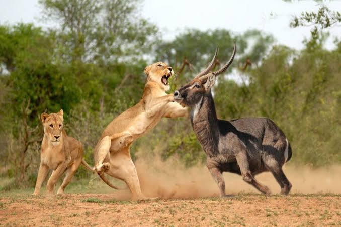

Welcome to the KWS portal. In this site, you can book trips, view our most recent gallery, file complaints, submit compliments, verify personell ID authenticity and much more. This is your gateway to discovering Kenya’s incredible wildlife, breathtaking landscapes, and unforgettable adventures. Explore our beautiful national parks, learn about the amazing animals that call Kenya home, and discover exciting destinations for your next safari. Whether you are a local visitor or a traveler from around the world, KWS welcomes you to experience and appreciate the natural beauty of Kenya.

The Kenya Wildlife Service (KWS) is dedicated to conserving and managing Kenya’s wildlife and natural ecosystems for the benefit of both present and future generations. Its mission is to protect the country’s diverse wildlife, preserve important habitats, and ensure that Kenya’s natural heritage remains available for people to enjoy and appreciate. KWS works to protect endangered and threatened species, prevent poaching and illegal wildlife activities, manage protected areas, and support the restoration of ecosystems that are essential to wildlife and communities. KWS also promotes responsible wildlife tourism and environmental education, helping people understand the importance of protecting nature and living alongside wildlife. Through conservation programs, research, community partnerships, law enforcement, and habitat management, KWS contributes to the long-term protection of Kenya’s biodiversity. The organization recognizes that wildlife conservation is closely connected to the well-being of local communities and the sustainable development of the country. By working together with communities, conservation partners, visitors, and other stakeholders, KWS aims to create a future where Kenya’s wildlife, landscapes, and natural resources are protected and valued for generations to come.

The vision of the Kenya Wildlife Service (KWS) is to see a Kenya where wildlife and nature are protected, valued, and thriving for generations to come. KWS envisions a future in which Kenya’s diverse wildlife, forests, wetlands, grasslands, marine environments, and other natural ecosystems are conserved and managed responsibly while supporting the well-being of the people who depend on them. KWS strives for a future where wildlife can live safely in healthy and well-managed habitats, where endangered species are given effective protection, and where the country’s natural ecosystems are able to recover and flourish. The vision also includes a society that understands the importance of wildlife conservation and actively participates in protecting Kenya’s natural heritage. Through conservation, research, education, community partnerships, and responsible tourism, KWS seeks to create a lasting relationship between people and nature. The ultimate goal is a Kenya where wildlife remains an important part of the country’s identity and heritage, where visitors can experience its natural beauty responsibly, and where future generations can continue to enjoy and benefit from the richness of Kenya’s wildlife and ecosystems. earn about the amazing animals that call Kenya home, and discover exciting destinations for your next safari. Whether you are a local visitor or a traveler from around the world, KWS welcomes you to experience and appreciate the natural beauty of Kenya.